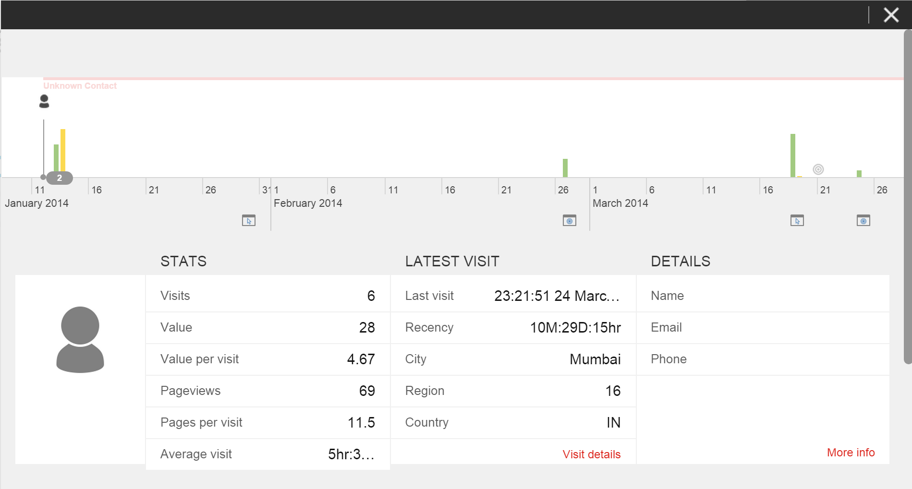

Path アナライザー¶
Path アナライザーは、コンタクトが Web サイトを遷移する際に通過した一連の Path を表示するマップを作成するアプリケーションです。コンタクトがキャンペーンに基づいて訪問した際に通過した Path や、ゴールやイベントといったビジネス上重要なアクティビティをコンバートする時に通過した Path を確認することができます。 新しい Path アナライザー マップを作成して、コンタクトがキャンペーンまたはデジタル アセットなどのコンテンツにたどり着くまでに体験した様々なエクスペリエンスをトラッキングすることができます。また、初めての訪問者によるエクスペリエンスや、またはリピータ顧客によるエクスペリエンスなど、Web サイトへの様々な種類の訪問をトラッキングするように Path アナライザーを設定することもできます。この情報をもとに、それぞれ異なるコンタクトがどのようにコンテンツと対話するのか理解することができます。 Path アナライザーは、最も高いトラフィック量を持つ Path や、最も高いエンゲージメント バリューを提供する Path 、そして最も高い訪問毎のエンゲージメント バリューまたは効果を提供する Path を表示します。これによって、Web サイト上で最も効果的な顧客体験や、効果が低く最適化の適用が可能なコンテンツについての知見を得ることができます。
{kind=link}
ページ アナライザー¶
広範囲にわたってコンタクトとコンテンツのインタラクションを確認するには、Path アナライザーを使用できます。Path アナライザーには、Web サイト全体で最も使用頻度の高いPath が表示されます。より小さい範囲でのインタラクションを確認するには、ページ アナライザーを使用できます。ページ アナライザーは、Web サイト上の特定ページへの Path およびそのページから遷移するPath表示します。

ページ アナライザーでは、ページへと誘導する Path について調査することができ、さらにその特定の Path を体験した個々のコンタクトについて確認することができます。

このように、Path アナライザーではすべての Path を表示するハイレベルパスマップ ビューから、ページ特有のアナリティクス ビュー、そしてその Path を体験した個々のコンタクトまで移動することができ、そのコンタクトのエクスペリエンス プロファイルを参照することができます。
{kind=link}
様々なコンタクト エクスペリエンスを分析する¶
Path アナライザーでは、Web サイト上でコンタクトが体験したエクスペリエンスのマップを作成して表示できます。これにより、コンタクトが特定のゴールまたはイベントをトリガーするまでに訪問したページを確認することができます。また、特定のチャネルもしくは特定のキャンペーンに基づくトラフィックのみからなるパスマップを設定することもできます。Path アナライザーは、ビジネス上の成果をもたらす効果的な Path と効果が低い Path を表示します。 さらに、Web サイト上でコンタクトが体験した様々な種類のインタラクションをマップすることもできます。例えば、Web サイトへの初めての訪問者のエクスペリエンスをマップし、さらに再訪した訪問者のエクスペリエンスを示すマップを作成して、この 2 つのエクスペリエンスがどのように異なるのかを比較することができます。また、ルールエンジンを使用して、場所やデバイスなどに基づくマップを作成することができます。コンタクトのエクスペリエンスを比較することによって、様々なコンタクトに対してどのようにコンテンツが作用するのかを理解することができます。